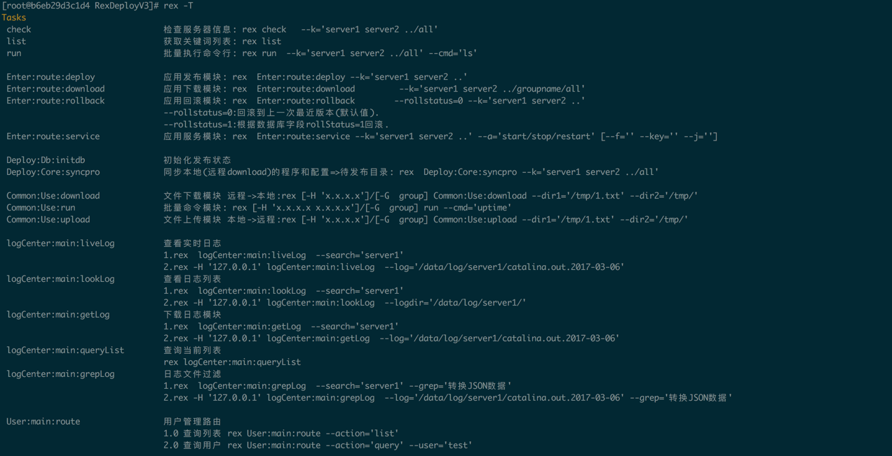

Centos平台安装
centos平台主要通过Shell脚本一键安装
# git clone https://gitee.com/lookingdreamer/RexDeployV3.git
# cd RexDeployV3 #确保进入到RexDeployV3根目录
# /bin/bash install/initStall.sh
自动安装配置脚本
用法示例:
1.安装依赖包: ./initStall.sh instalib
2.安装mysql: ./initStall.sh installmysql
3.初始化配置 ./initStall.sh setConfig
# 第一步 安装依赖包
/bin/bash install/initStall.sh instalib
# 第二步 再次执行安装依赖包,确认依赖是否安装成功（如果已经安装过了,不会重复安装）
/bin/bash install/initStall.sh instalib
[ 2018-03-24 17:23:33 ] rex框架已经安装.
[ 2018-03-24 17:23:33 ] 开始安装perl/db支持
[ 2018-03-24 17:23:34 ] DBI模块已经安装.
[ 2018-03-24 17:23:34 ] DBD::mysql模块已经安装.
[ 2018-03-24 17:23:34 ] Mojo::JSON模块已经安装.
[ 2018-03-24 17:23:34 ] JSON:PP模块已经安装.
[ 2018-03-24 17:23:34 ] 安装perl支持完成
# 第三步 安装mysql (如果你有mysql了,或者有其他可用的mysql可使用,此步骤可以省略)
/bin/bash install/initStall.sh installmysql
# 第三步 初始化配置 (该步骤会自动灌入sql初始化数据以及初始化相关模块)
/bin/bash install/initStall.sh setConfig
mysql Ver 14.14 Distrib 5.6.39, for Linux (x86_64) using EditLine wrapper
请输入数据库地址:127.0.0.1
请输入数据库端口:3306
请输入数据库用户:root
请输入数据库密码:root
请输入数据库名:autotask
Warning: Using a password on the command line interface can be insecure.
[ 2018-03-24 17:26:33 ] 数据库连接成功.
[ 2018-03-24 17:26:33 ] 开始灌入数据
Warning: Using a password on the command line interface can be insecure.
[ 2018-03-24 17:26:33 ] 灌入数据成功
[ 2018-03-24 17:26:33 ] 初始化数据库配置
[ 2018-03-24 17:26:33 ] 配置完成:lib/Deploy/Core/__module__.pm
[ 2018-03-24 17:26:33 ] 配置完成:lib/Deploy/Db/__module__.pm
[ 2018-03-24 17:26:33 ] 初始化数据库配置完成
[ 2018-03-24 17:26:33 ] 初始化rex模块包
[ 2018-03-24 17:26:33 ] 初始化rex模块包成功
安装并初始化配置之后执行 cd RexDeployV3 && rex -T, 看到以下提示，则证明安装已经成功.